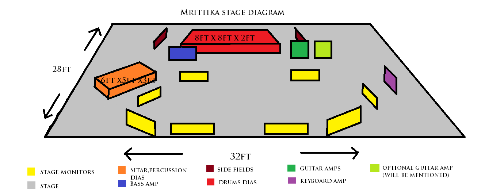

Tech Rider
Our stage setup is - 1 Drum kit and percussions (Tabla, Darbukka), 1 Keyboard, 1 Guitar, 1 Zitar, 2 vocals, 3 backing vocals. Full performance show length is 120 minutes with a 10 minutes break. We do NOT perform requests.
- We will need a qualified sound engineer, at least 3 stage technicians and lights technician.
- Lighting can be discussed during sound-check, it is important though that during the show there is always sufficient light.
- Please do NOT use fog and do NOT use stroboscope lights
- We will need an absolute minimum of 60 minutes sound-check. 90 to 120 minutes including setup would be perfect.
- We need a safe parking space available for the band close to the venue. The promoter or another person should be at the venue at arrival time.
- Please provide minimum 14 bottles of non-carbonated water, room temperature. There should be resting rooms for musicians.
- A table and small light for our merchandising in the same room as the show, if possible.
- There is a large amount of promotional material we can send to you for advertising purpose. Please inform us if you need posters, flyers, or templates.
- We assume that there is a well-sized PA system provided for the concert room.
- Drumkit
- 1 Pearl / Yamaha 5 or 6 piece regular drum set.
- 1 snare drum
- 1 bass drum
- 2 toms
- 1 or 2 floor toms
- 4 cymbal stands, 1 hi-hat stand
- 1 drum thorne
Good condition drum heads.
- Bass Amp
- 1 Hartke LH100 Bass Amp Head and Hartke Highdrive series 4x10 1000W Bass speaker cabinet / Fender Rumble / Peavey Max 115
- Guitar Amp
- 1 Fender Twin Reverb / Roland JC120
- Keyboard Amp
- 1 Roland KC550 / Hartke KM200
- D. I. Boxes
- 6 D. I. Boxes (Ashton DI10 or equivalent)
- Microphones
-
- 2 main vocals (Shure SM58 or equivalent)
- 3 backing vocals (Shure SM58 or equivalent)
- 8 Drum microphones -
- Shure SM57 for snare drum
- Regular microhones for tom and bass drum
- 2 overhead condenser microphones
- 1 Shure PG81 for Tabla
- Monitors
-
- 8 stage monitors
- 2 side fills
- Mixing Console
- Analog - SI3 / GL2400 or Digital - LS9 / M7CL32 mixing console
- Stage Dimension
-
- 32' x 28' stage area
- 6' x 5' x 3' dias for Zitar
- 8' x 8' x 2' carpeted drum rise

If you are facing any problem meeting these requirements, please let us know -